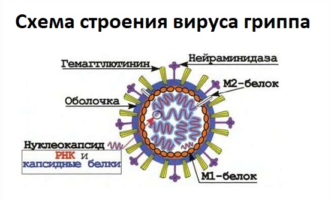
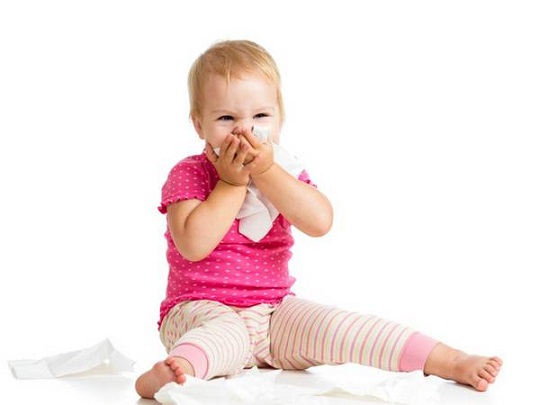
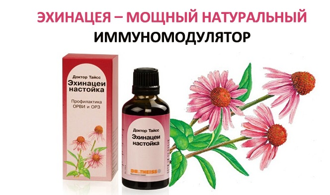
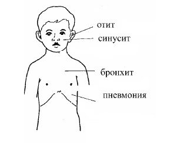
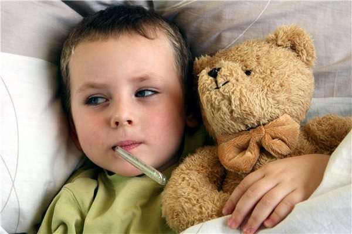

Это очень обширная тема, но большинство «простуд» (острых респираторных вирусных инфекций — ОРВИ, острых респираторных заболеваний — ОРЗ) начинаются одинаково. Ваш ребенок подхватывает небольшой насморк или кашель. Это или остается умеренным и проходит через неделю-другую, или ухудшается, превращаясь в более докучливую инфекцию. Вот все, что вам нужно знать, чтобы помочь ребенку во время болезни.
СИМПТОМЫ
• Длительность ОРВИ (ОРЗ) различная, от нескольких дней до 3 недель, включая несколько дней, когда текут зеленые сопли.
• Лихорадка, которая может длиться до 5 дней.
• Непродуктивный сильный кашель, иногда приступы кашля, которые доводят до рвотных позывов и рвоты.
• Умеренная боль в ушах.
• Головная боль и ощущение распирания носовых пазух.
• Боли в горле.
• Ребенок капризничает и часто просыпается ночью.
• Отмечается снижение аппетита.
ПРИЧИНЫ
Вирусы (вирусы, вызывающие ОРВИ). Большинство ОРЗ вызываются вирусами. Обычно ОРВИ проходят в течение недели и включают в себя некоторое повышение температуры тела и фазу «зеленой слизи». К счастью, как правило, они проходят без какой-либо антибиотикотерапии.
Бактерии. Есть несколько видов бактерий, которые вызывают кашель и другие симптомы ОРЗ. Будьте готовы пережить несколько дней лихорадки и некоторое количество зеленой слизи из носа. Даже бактериальные насморк и кашель часто проходят без антибиотиков. Наша иммунная система обычно справляется сама.
Вирус гриппа. Кашель и насморк также могут быть проявлениями более неприятной инфекции — гриппа.

СОВЕТ ДОКТОРОВ СИРС: ЭТО ОБЫЧНАЯ ПРОСТУДА ИЛИ ГРИПП? Если человек болеет во время эпидемии гриппа, его всегда интересует вопрос: не ужасный ли это грипп. Лучше всего сказать так: грипп обычно начинается с сильных головных болей и повышения температуры тела. Банальная ОРВИ начинается с небольшой боли в горле и насморка, которые затем усиливаются. |
При нем обычно наблюдается высокая температура тела, ломящие боли во всем теле, тошнота/рвота и другие симптомы гриппа.
КОГДА НЕ ВОЛНОВАТЬСЯ
С вопроса, когда волноваться, а когда нет, начинается понимание того, как протекает обычная ОРВИ. Существуют два направления развития заболевания, которые вы можете ожидать при обычном насморке и кашле. Пока состояние вашего ребенка соответствует этим описаниям, вы можете быть уверены, что, скорее всего, инфекция не бактериальная.
Постепенное начало. Некоторые ОРВИ начинаются с насморка с прозрачным отделяемым и умеренного сухого кашля, но в целом ребенок чувствует себя нормально. Через несколько дней слизь становится гуще и приобретает желтый или зеленый цвет. Кашель усиливается и становится более глубоким. В это же время может повыситься температура (обычно не выше 102° по Фаренгейту = 38,9° по Цельсию) и держаться от 1 до 5 дней. Как раз, когда вы подумываете, что пора посетить врача, все начинает проходить. Нос почти свободен, лихорадка прекращается, возвращается аппетит, у ребенка сохраняется редкий глубокий кашель и умеренная заложенность носа, причем не заметно, чтобы это его особо беспокоило. В целом после двух-трех недель ваш ребенок как новенький.
Внезапное начало. В другой раз насморк и кашель появляются откуда ни возьмись, сразу же с тяжелыми симптомами, включая лихорадку, боли, снижение аппетита и активности. Кашель и заложенность носа сильные и беспокоящие. Спустя всего пару дней такого состояния начинается улучшение. Температура тела нормализуется, и ребенок снова чувствует себя нормально. Небольшие проявления сохраняются неделю или две и в конце концов исчезают.
Пока болезнь вашего ребенка укладывается в рамки этого описания, и вы можете обеспечить ему достаточный комфорт с помощью различных методов, описанных ниже, можете быть уверены, что он не нуждается в медицинской помощи.

ЛЕЧЕНИЕ
Вот несколько способов очистить нос и дыхательные пути ребенка и помочь ему быстрее выздороветь.
Натуральные растительные средства. В аптеках и магазинах здорового питания есть много натуральных растительных средств для носовых пазух и легких. Одно из наших любимых — «Синупрет», фармакологическое средство из растительного сырья.
«Душ для носа». Очищение носа от густой слизи — один из лучших способов предупредить бактериальную инфекцию.
Укрепите иммунную систему. Эхинацея, витамин С и цинк — полезные добавки, которые могут помочь иммунной системе справиться с болезнью.
Спать вертикально. Положите подушку под матрас младенцу или поднимите голову ребенку постарше с помощью нескольких подушек. Это облегчит ему дыхание.
Паровые ингаляции. Ночью включайте в спальне паровой испаритель (внимание: это грозит ожогом любопытных ручек. Сначала научите ребенка, что горячий пар опасен). Если ребенок проснулся ночью с сильной заложенностью, посидите в ванной комнате, включив на несколько минут горячий душ, — это быстро облегчит дыхание.

СОВЕТ ДОКТОРОВ СИРС: УКРЕПИТЕ ИММУНИТЕТ СВОЕГО РЕБЕНКА Один из лучших способов воспрепятствовать осложнению обычного насморка вторичной бактериальной инфекцией — давать ребенку иммуностимуляторы при первых признаках заболевания, например, мягко действующие препараты эхинацеи пурпурной. |
Детей постарше можно посадить лицом к кастрюле с горячей водой (только не на плите, пожалуйста). Добавьте масло эвкалипта или лаванды в теплую ванну, пар от душа, косметологический парогенератор, кастрюлю с горячей водой, в увлажнитель. Такое естественное увлажнение очень хорошо устраняет заложенность как в носу, так и в груди.
Похлопайте по груди и по спине. Крепко похлопайте открытой ладонью по груди, бокам и спине ребенка во время паровой ингаляции.
Безрецептурные средства при насморке и кашле. Хотя они не помогут быстрее избавиться от инфекции, но облегчат ее течение. Молодые родители могут запутаться в этих препаратах. Немало их стояло в отделе безрецептурных средств местной аптеки, вытаращив глаза на ассортимент. Выбор между противокашлевыми и отхаркивающими, антигистаминными и противоотечными или любыми возможными комбинациями буквально способен вызвать головную боль. Считается, что безрецептурные средства от кашля и средства от простуды нельзя давать детям младше 4 лет. Вот руководство, которое поможет вам разобраться в предлагаемых вариантах:
Запомните четыре главных составляющих средств от простуды:
1. Противоотечные средства для носа — помогают в основном при заложенности носа. Действуют, снижая образование слизи и уменьшая отек слизистой носа. Таким образом, восстанавливается возможность дышать через нос. Среди побочных эффектов — повышенная возбудимость и нарушения сна.
2. Антигистаминные — главным образом помогают подсушить очень сильный насморк, уменьшая образование слизи в носу. Наиболее вероятный побочный эффект — сонливость, которая хороша ночью, - но неуместна днем.
3. Противокашлевые препараты — помогают при постоянном раздражающем кашле. Эти средства подавляют кашлевой рефлекс, так что слизь или раздражение горла не вызывают кашель. Побочных эффектов нет.
4. Отхаркивающие средства — помогают, когда у ребенка в трахее и бронхах скапливается густая слизь, которую он не может откашлять.
СОВЕТ ДОКТОРОВ СИРС: КАК ВЫБРАТЬ НУЖНОЕ СРЕДСТВО Неважно, как называется лекарство, и не стоит путаться в длинных научных названиях компонентов. Определите, какие симптомы нужно лечить. Под названием лекарства на передней этикетке перечислены типы составляющих (противоотечное, противокашлевое и т.д.), находящихся в бутылочке. Это облегчит ваш выбор. Кроме того, неплохо использовать несколько средств одновременно, если их действие не пересекается. Например, можно давать антигистаминные/противоотечные с противокашлевыми или отхаркивающими средствами. Отхаркивающие средства лучше давать в первой половине дня, а противокашлевые — на ночь. |
СООТВЕТСТВИЕ СИМПТОМОВ И ЛЕКАРСТВЕННЫХ ПРЕПАРАТОВ
Симптом |
Рекомендованный препарат |
Объяснение |
Сухой кашель |
Противокашлевый препарат |
Если у вашего ребенка только раздражающий кашель, особенно сухой, но нет ни сильного насморка, ни заложенности — используйте только противокашлевое средство |
Умеренный влажный кашель |
Отхаркивающее средство |
Если кашель у вашего ребенка умеренный — всего несколько раз за час — и не мешает ему спать или у не-, го скопилась густая слизь, которую ему трудно откашлять, — используйте отхаркивающее средство |
Кашель Заложенность в груди |
Противокашлевое Отхаркивающее |
Если у ребенка влажный, продуктивный кашель, мешающий ему днем или ночью, нет сильной заложенности носа или носовых пазух — используйте комбинацию противокашлевого и отхаркивающего |
Заложенность носа |
Противоотечное Отхаркивающее |
Если у ребенка заложен нос без сильного насморка с раздражающим кожу отделяемым, противоотечное средство должно помочь. Отхаркивающее поможет, если есть густая слизь, но оно не обязательно. Противоотечные средства могут вызвать нарушения сна (если они не в комбинации с антигистаминными), поэтому применять их лучше днем |
Кашель Заложенность груди Заложенность носа |
Противокашлевое Отхаркивающее Противоотечное |
Если у ребенка влажный продуктивный кашель с заложенностью груди, носа или носовых пазух, но нет сильного насморка с раздражающей кожу слизью, используйте комбинацию противокашлевого и противоотечного. Отхаркивающее поможет при густой слизи, но оно не обязательно. Противоотечные средства могут вызвать нарушения сна (если они не в комбинации с антигистаминными), поэтому применять их лучше днем. В состав некоторых препаратов также входит ацетаминофен (жаропонижающее), который поможет облегчить любые боли или лихорадку |
Ночной кашель Заложенность носа Насморк Заложенность груди |
Антигистаминное Противоотечное Противокашлевое Отхаркивающее |
Эта комбинация великолепна при насморке с раздражающей кожу слизью, заложенности носа и частом кашле, который мешает спать. Хорошо использовать ночью, поскольку антигистаминное средство вызовет у ребенка сонливость. В состав некоторых препаратов также входит ацетаминофен (жаропонижающее), который поможет облегчить любые боли или лихорадку |
Насморк Заложенность носа |
Антигистаминное Противоотечное |
Напоминает вышеописанную ситуацию, но без раздражающего кашля. Хорошо использовать ночью, поскольку антигистаминное средство вызовет у ребенка сонливость. В состав некоторых препаратов также входит ацетаминофен (жаропонижающее), который поможет облегчить любые боли или лихорадку |
Разжижают густую слизь, облегчая откашливание. Побочных эффектов нет.
КОГДА ВОЛНОВАТЬСЯ
Слизь, собирающаяся в ушах, носу, горле и легких при любой ОРВИ, — прекрасное место для размножения бактерий. Если их станет достаточно много, то развивается вторичная бактериальная инфекция, которую называют так:
Отит (ушная инфекция). Самым ярким признаком развития отита является боль в ухе. Младенцы, которые еще слишком малы, чтобы сообщить, что у них болит ухо, могут стать беспокойными и хвататься за уши. Но не любой отит требует лечения антибиотиками.
Синусит (инфекция придаточных пазух). Заложенность носа, густая желтая или зеленая слизь, головная боль в проекции пазухи или боль вокруг носа, глаз, в области лба, щек, повышение температуры тела обычно указывают на синусит. В первые дни синуситы не всегда нуждаются в лечении антибиотиками.
Бронхит. Бронхит — воспаление бронхов. Он сопровождается продуктивным кашлем со слизью и, возможно, болью в горле и в груди при кашле. Большинство бронхитов у детей имеют вирусную природу и не нуждаются в антибиотиках. Однако если боль при кашле сильная и повышение температуры тела сохраняется дольше, чем несколько дней, есть вероятность, что это бактериальная инфекция.
Пневмония. Симптомы пневмонии включают одышку, учащенное дыхание, боль в груди, сильный кашель, лихорадку, сонливость, хрипы и иногда рвоту. Обычно врач может диагностировать пневмонию, исходя из этих симптомов и выслушав легкие. При необходимости точного диагноза можно сделать рентгенографию грудной клетки.

ВИДЫ КАШЛЯ, ТРЕБУЮЩИЕ ОСОБОГО ЛЕЧЕНИЯ
Существуют три вида кашля, которые надо лечить иначе, чем обычный кашель при ОРЗ.
1. Круп — это воспаление голосовых складок и верхних дыхательных путей. Характерная особенность крупа, которая отличает его от обычного кашля, — звонкий лающий тембр кашля. У ребенка также может быть осипший голос при разговоре, плаче или крике.
2. Коклюш. Это заболевание вызывается особыми бактериями и характеризуется особым кашлем. Спустя 1—2 недели обычного кашля и симптомов ОРЗ у ребенка начинаются приступы кашля длительностью от 30 секунд до 1 минуты. Кашель настолько сильный, что ребенок не может вдохнуть во время приступа. После окончания приступа он делает глубокий вдох, издавая при этом характерный «кричащий» звук.
СОВЕТ ДОКТОРОВ СИРС: ЭТО ОРЗ ИЛИ АЛЛЕРГИЯ? Многие родители обращаются к нам при появлении симптомов ОРЗ, чтобы узнать, простужен ли ребенок или у него развилась аллергия. Правда, врач, скорее всего, не сможет сказать наверняка, пока не пройдет 1—2 недели. Да и нет особой необходимости сразу же различить эти два состояния, потому что лечение вначале одинаковое: «душ для носа», паровые ингаляции, безрецептурные противоотечные препараты или натуральные средства. |
3. Младенческий хрип (врожденный стридор). Причиной его является узость верхних дыхательных путей, которая с возрастом проходит. Стридорозное дыхание хорошо слышно во время бодрствования ребенка и исчезает во сне.
СРАВНЕНИЕ СИМПТОМОВ ОРВИ И АЛЛЕРГИЧЕСКОГО РИНИТА
ОРВИ (ОРЗ) |
Аллергический ринит |
Отделяемое из носа более густое |
Прозрачная слизь из носа |
Заложенность носа |
Зуд в носу, чихание |
Более глубокий и продуктивный кашель |
Кашель сухой, горло чистое |
Лихорадка, плохое самочувствие |
Не чувствует себя больным |
Ранее аллергий не наблюдалось |
Известно, что раньше были аллергические проявления |
КОГДА ОБРАТИТЬСЯ К ВРАЧУ
Всем родителям приходилось решать вопрос, надо ли вести к врачу простуженного, кашляющего и лихорадящего ребенка. Конечно, вам не хочется совершать ненужную и дорогостоящую поездку без особой нужды. Но и слишком долго выжидать, задерживая начало лечения в случае, если это серьезное заболевание, тоже не годится. Если вы хоть сколько-нибудь сомневаетесь — лучше перестраховаться. Вот общие симптомы, появление которых означает, что пора звонить врачу в приемные часы:
ВОЗВРАЩЕНИЕ В ШКОЛУ ИЛИ ДЕТСКИЙ САД
Большинство ОРВИ представляют источник инфекции все время болезни, которая может длиться неделями. Держать ребенка дома все это время нет смысла, но слишком раннее возвращение в детский коллектив создаст угрозу инфицирования других детей.
КАК РЕШИТЬ, КОГДА НЕОБХОДИМЫ АНТИБИОТИКИ Ваш врач обычно выписывает антибиотики при осложнениях ОРВИ бактериальной инфекцией — от самой умеренной до тяжелой. Однако не все бактериальные инфекции необходимо лечить антибиотиками: здоровая иммунная система в состоянии справиться с бактериями самостоятельно. Из-за злоупотребления антибиотиками, способствующего развитию устойчивых штаммов бактерий, врачи теперь гораздо более осмотрительны с этими назначениями. При умеренных отитах и синуситах антибиотики обычно не нужны, как и при бронхите без лихорадки. |
Однако следует учесть, что ОРВИ наиболее опасны в первые дни болезни, так что, скорее всего, другие дети уже контактировали с возбудителями прежде, чем вы заметили, что ваш ребенок болен. Вероятно, когда вы отправите ребенка в школу, он еще будет источником инфекции, но такова жизнь. Напомните ему о необходимости часто мыть руки, не делиться своей едой и напитками и не целовать никого, пока он не будет полностью здоров. Вот несколько способов определить, можно ли отправлять ребенка в школу или садик:
Лихорадка. Как только температура у ребенка остается нормальной без жаропонижающих в течение 24 часов, он может идти в школу.
Постоянный кашель и насморк. Дайте ребенку натуральное или медикаментозное средство от насморка и кашля. Если кашель не стал реже и насморк не уменьшился — ребенку надо еще побыть дома.

Зеленые сопли. Они также должны уменьшиться или исчезнуть после приема медикаментов, в противном случае ребенка надо оставить дома. Это тот самый случай, когда очень заманчиво применить антибиотики — тогда зеленый цвет уйдет скорее. Но если ребенок не слишком болен, лучше от них воздержаться. Хорошей паровой ингаляции и средства от насморка утром достаточно, чтобы уменьшить насморк настолько, чтобы ребенок мог пойти в школу.
СОВЕТ ДОКТОРОВ СИРС: ЗЕЛЕНЫЕ – НЕ ОБЯЗАТЕЛЬНО ПЛОХО Существует распространенное заблуждение, что зеленые сопли более опасны в плане распространения инфекции. Это не так. ОРВИ гораздо больше передается в начальной стадии прозрачной жидкой слизи посредством кашля и чихания. Но в этот момент передается вирус. Когда сопли становятся зелеными, любые вызвавшие это бактерии являются источником инфекции, если другой ребенок тесно контактирует с ними. Если ребенок часто моет руки и не хватает ими все подряд, то густая зеленая слизь далеко не столь опасна в качестве источника инфекции. |
Здоровье ребенка от докторов Сирс / Сирс У. и др.